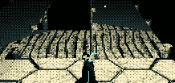

TIC-80 is a fantasy console with artificial limitations similar to PICO-8. 16-colors, 240x136 and very limited space for code and data.
You can run my demos, as well as creations of others on the official TIC-80 website.
I like this FC because it can be programmed with the full version of Lua (along with a bunch of other languages), as opposed to Pico-8 (the FC that made it a trend) which has some strange all-caps version (which I can see the charm of, but which would be a bigger sacrifice than I'd be willing to make for these kinds of side-projects. I'd rather go all in and progam a real retro console like PS1 or GBA if I'm going to put limits like that on myself).
Spent some time working on a demo in the first persion perspective in order to get real close to the polygons, because I had an idea on how to achieve el-shading via clipping that I wanted to try out.

Some basic running an jumping. The character you control is just a sphere, brute force collided against all the geometry.

This was made before perspective correct texturing was a thing in TIC-80, so to remedy the affinedness (?) some quick and dirty triangle subdivision is applied.
For a while I completely nerded out on the subject of polygon subdivision, because I wanted to perfect it for other projects unrelated to TIC-80. Getting the maximum visual bang for the buck, using as little subdivision as possible, proved to be a challenge.
Note that the division at display on this page is very far from perfect.
Directional "light clipping" in action

Radial "light clipping" in action

I also wanted to try out on-the-fly "tesselation". Earlier lighting model is used here with positional lighting (and normals ignored). (Normals are still used by the... vertex extrapolation function in the tesselation.)
My first project on the platform was to write a rasterizer in Lua, to be used for an entry to a 2017 game jam (FCGJ#1). I had grandiose ideas for the game, but time objected to me making anything more than this little rollercoaster ride.
And yet another demo, started on for Ludum Dare, most of the weekend just spent tinkering with the rendering and lighting.
That is all. Thanks for scrolling by.